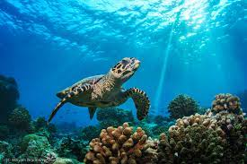
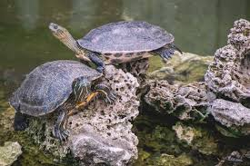

Характерным признаком черепахи является крестообразный пластрон и длинный хвост, который покрыт чешуей с мелкими шипами, также как и кожа головы и шеи. Размеры панциря этих черепашек могут достигать 35 см, а вес взрослого животного — 30 кг. Неблагоприятные условия каймановая черепаха пережидает в спячке.
Практически любые неядовитые для черепах растения, овощи, фрукты и ягоды — одуванчики, морковь, яблоки, салат, помидоры, огурцы, груши, бананы. 80% всего рациона должна составлять зелень — разнообразные салаты, листья, съедобные цветы.
 